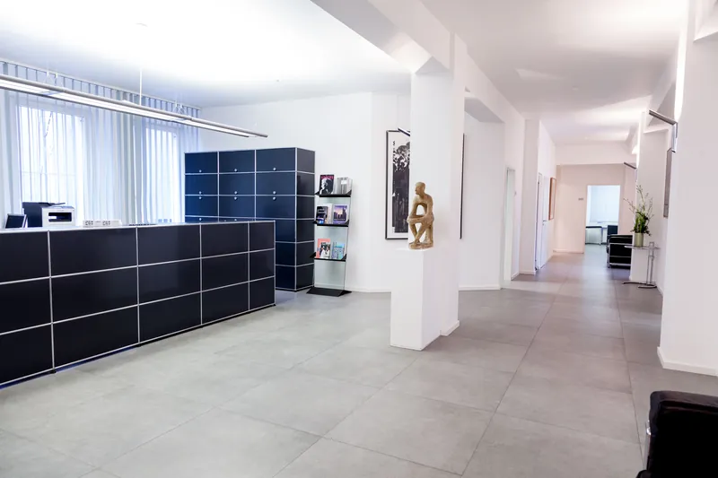
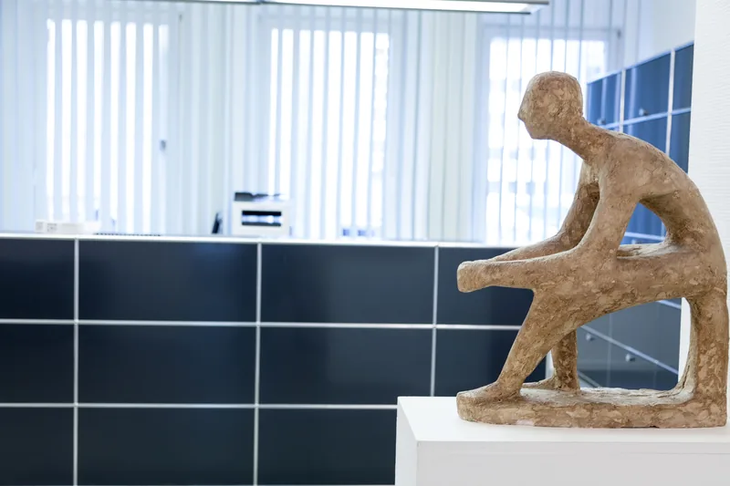
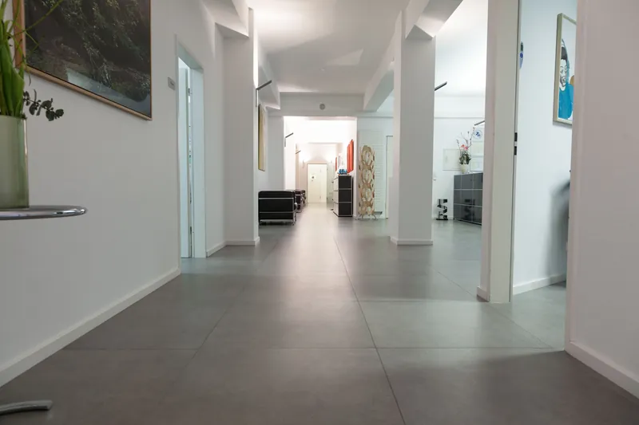
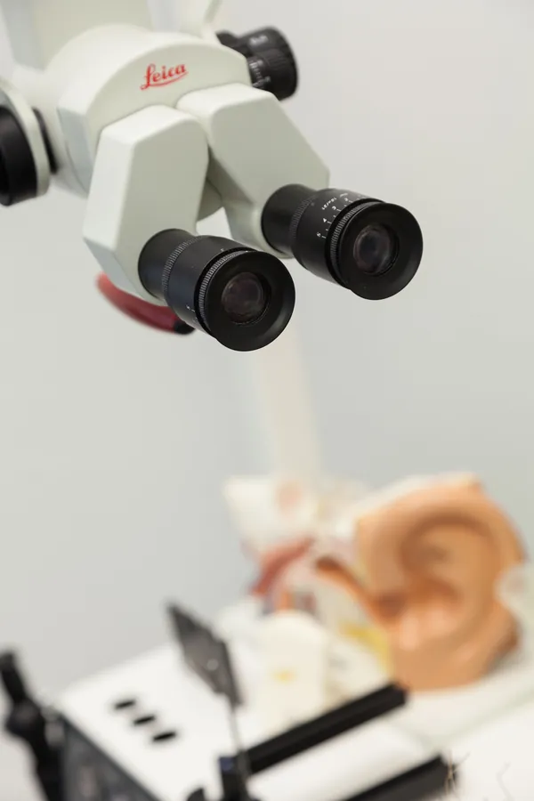
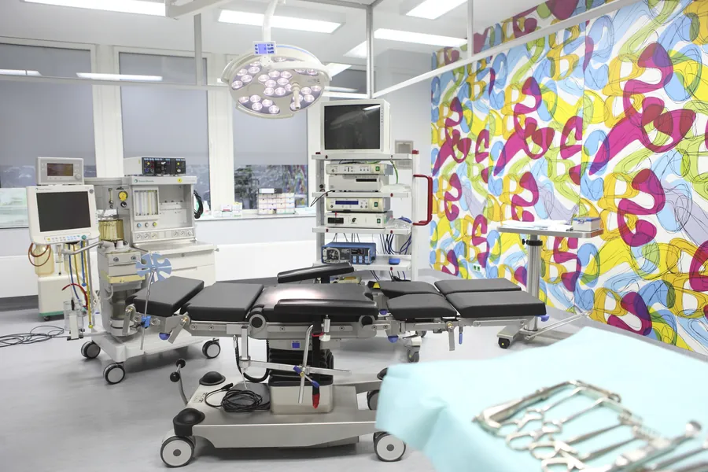
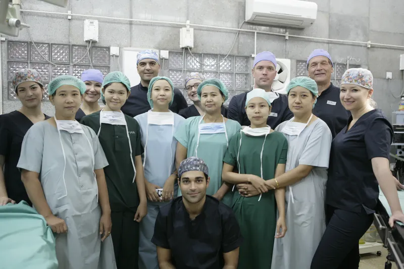
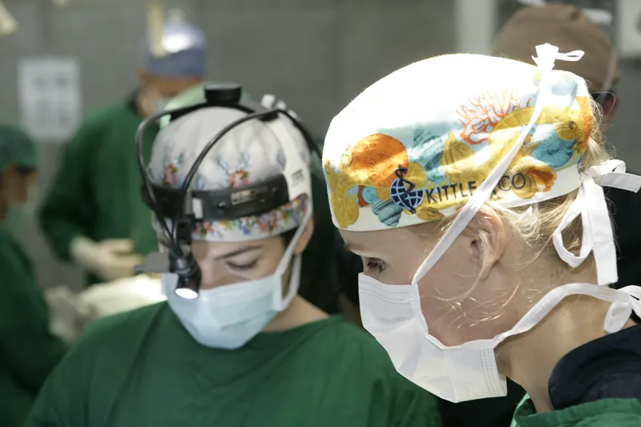
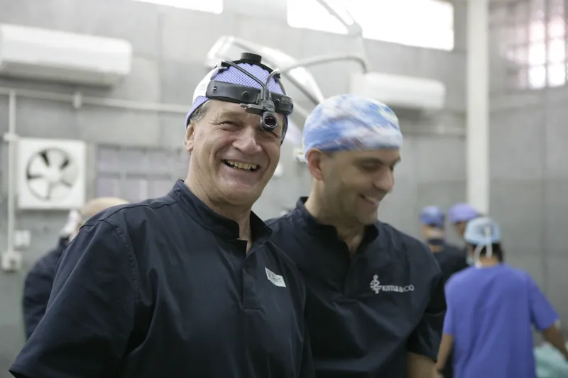

Die Praxis
Die HNO-Praxis am Goetheplatz liegt am Roßmarkt 23 in der Frankfurter Innenstadt, wenige Minuten von der Hauptwache.

Philosophie
Qualität ist uns Verpflichtung, Menschlichkeit oberstes Prinzip.
Innovative Forschung ist der zentrale Motor medizinischen Fortschritts. Unser Streben richtet sich auf die stetige Verbesserung der kompetenten und effektiven Versorgung unserer Patienten. Unsere Ausbildung an der Universitätsklinik in Heidelberg verpflichtet uns zu einer präzisen und sicheren Medizin. Die Mitarbeit unseres akademischen Lehrers und ehemaligen Direktors der Universitätsklinik Heidelberg, Prof. Dr. Hagen Weidauer, unterstreicht dies.
Der Mensch steht im Mittelpunkt. Zugewandtheit, Engagement und Empathie prägen für uns die individuelle Arzt-Patienten-Beziehung. Eine differenzierte und gewissenhafte Aufklärung und ein Einbeziehen des Patienten in die Therapieentscheidung liegen uns am Herzen.
Wir sind überzeugt, dass unsere ärztliche Expertise genau dann am wirkungsvollsten ist, wenn wir uns auf ein handlungsfähiges Team verlassen können, das sich mit uns gemeinsam den höchsten Ansprüchen an medizinische Dienstleistung und ethische Verantwortung verpflichtet fühlt.
Grundlage unseres ärztlichen Handelns ist die Genfer Deklaration des Weltärztebundes.
Räume
Empfang und Wartebereich 
Flur mit Kunst an den Wänden 
Empfangstresen 
Sprechzimmer 
Flur zu den Behandlungsräumen 
Leica-Ohrmikroskop 
ImmunoCAP im Praxislabor
Hygiene
Hygiene und Qualitätsmanagement
Wir nehmen den Infektionsschutz als eine der wichtigsten Aufgaben unserer Praxisführung wahr. Die aktuellen Richtlinien der Hygieneverfahren und des Arbeitsschutzes sind fest in unsere Praxisorganisation eingebunden. Wir folgen unter anderem den Richtlinien für Krankenhaushygiene und Infektionsprävention des Robert Koch-Instituts, den Anforderungen des Bundesinstituts für Arzneimittel und Medizinprodukte (BfArM) an die Aufbereitung von Medizinprodukten sowie den berufsgenossenschaftlichen Vorschriften.
- Risikobewertung der Instrumente und Einstufung in Risikoklassen nach RKI-Richtlinie
- Fachschulung des Personals in Hygiene und Verfahrenstechnik
- Exakte Festlegung der Verfahrensschritte und Verantwortlichkeiten im Hygieneplan
- Genaue Dokumentation und Überprüfung der Aufbereitungsverfahren mit Chargenkontrolle und Bioindikatoren
Labor und OP

Soziales Engagement
Medical Intervention Team e.V.
Das Medical Intervention Team e.V. (MIT) ist ein gemeinnütziger Verein, gegründet 2009 von der Frankfurter Plastischen Chirurgin Dr. Julia Berkei und dem Frankfurter HNO-Arzt Dr. Barun Sarkar. Erfahrene Plastische Chirurgen, HNO-Fachärzte, Mund-, Kiefer- und Gesichtschirurgen, Anästhesisten, Zahnärzte und Oralchirurgen helfen gemeinsam Menschen in Entwicklungsländern und Krisengebieten.
Die Einsätze finden im Sitagu Ayudana Hospital in Sagaing Hills nahe Mandalay statt, einer kleinen Klinik in einem buddhistischen Klosterkomplex. Den Ärzten liegen besonders die Kinder am Herzen: Lippen-Kiefer-Gaumenspalten sind in Myanmar sehr verbreitet und bleiben ohne Hilfe meist unbehandelt, mit schweren Folgen für Ernährung, Sprache und das Leben in der Gemeinschaft.
Eine Operation kostet rund 500 Euro. Die Ärzte nehmen sich für die Einsätze Urlaub und tragen einen Teil der Reisekosten selbst, sodass alle Spenden den Patienten zugutekommen. Ebenso wichtig ist die Ausbildung von Ärzten und Pflegekräften vor Ort. Mehr als 580 Patienten, insbesondere Kinder, wurden bereits behandelt.


